Repulsive Force Function
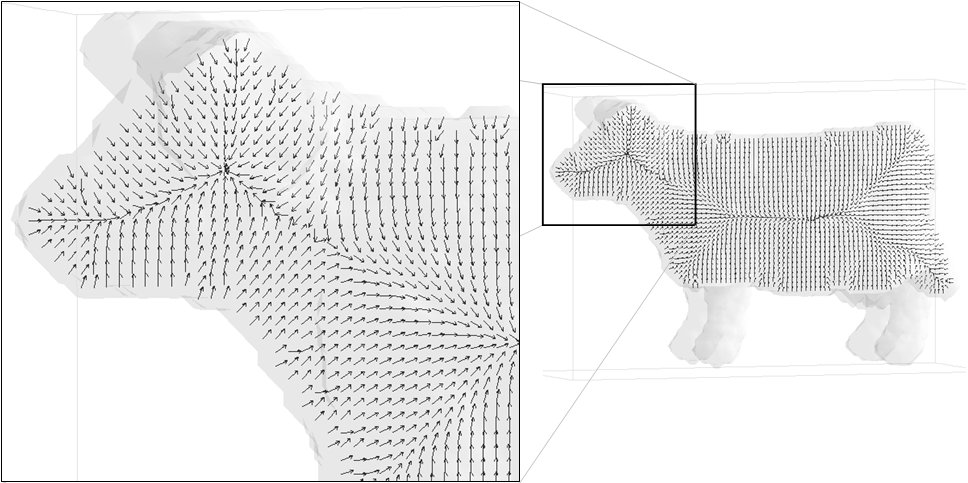We use a generalized potential field approach [1]. The key idea behind the potential field approach is to generate a vector field inside the object by charging the object’s boundary.
We place electrical point charges on the object's boundary, considering each boundary voxel to be a point charge (a boundary voxel is an object voxel which has a background neighbor). The repulsive force at an interior object voxel due to a nearby point charge is defined as a force pushing the voxel away from the charge with a strength that is inverse proportional to the distance between the voxel and the charge, raised at a certain power m which we call "the field strength". The "field strength" is a parameter of the program. The final repulsive force at each interior voxel is computed by summing the influences of all the point charges. The resulting vector field is also called a force field.
A high "field strength" (m) will cause the local point chanrges to have a higher influence on a given interior voxel than the more distant charges, thus creating a vector field with sharper path-lines because it follows the local boundary topology more closely. A low value for the m parameter will produce a smoother vector field, with more rounded corners, since the vector direction at a particular point is now influenced by more point charges.
Because the algorithm uses all the point charges for force computation at each interior voxel, visibility errors can result for objects with tapered limbs (like a comb) since individual voxels within each prong of the comb cannot “see” the charges corresponding to the other prongs and those charges should not be considered in the force field calculation. Using a high "field strenght" minimizes this effect by reducing the influence of more distant point charges.
Resolution/discretization is an important external factor affecting the performance of the algorithm and changing the accuracy of the solution. Clearly a 43 grid will yield a less accurate result than a 603 grid. A 1 or 2 voxels thick object region will not have enough resolution to properly compute the repulsive force field in that region (this is a common simulation issue). For such regions, the repulsive force field is extremely sensitive to even small boundary perturbations, resulting in discontinuities of the flow pattern inside the object’s boundaries. As a result, the interior skeleton can become disconnected just because the force-following algorithm becomes stuck in these perturbed regions of the force field (see the next sections). To overcome this problem, one can either increase the resolution of the voxelization or "pad" the object with a number of extra layers of voxels (dilation), making the object thicker (this is another parameter of the program). "Padding" produces a smoothing effect of the object’s boundary, which makes it suitable for noisy objects, but can also merge object features that are very close to each other.
Critical points and the “core skeleton”
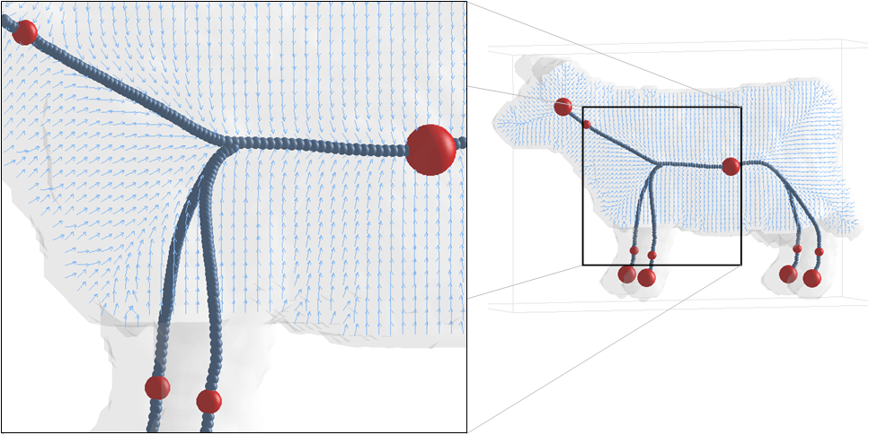Critical points are important vector field topology components and are often used in vector field visualization. These are the points where the magnitude of the force vector vanishes. Critical points are difficult to locate in a vector field, particularly because they do not necessarily occur at the given sample locations, but often occur in between sampling points. We use a sub-division scheme to locate all the critical points in the vector field (see paper for details). Once extracted, the critical points are classified into attracting nodes (where all vectors are pointing towards the critical point), repelling nodes (where all the vectors are pointing away from the critical point) and saddles (where some vectors are pointing towards the critical point and others away from it). Saddle points will occur between attracting or repelling nodes directing the flow towards one or another and can be used to connect them. Intuitively, the outward flow directed away from a saddle point, can only reach an attracting node or another saddle inside the object since the vector field was generated by the closed boundary of the object and points towards the interior.
Path-lines are seeded from saddles in the directions of the outward flow and a path-line force-following algorithm is applied which stops at another critical point or when it arrives at a previously visited location. The force-following algorithm evaluates the force value at each point along a path and moves in the force direction with small steps. Samples taken along the integration path started at a saddle point form a skeleton segment. Skeleton segments connecting all the critical points of the force field are known as critical-curves and form the core skeleton.
The core skeleton represents level 0 in the skeleton hierarchy. However, the core skeleton contains only part of the central curve-skeleton for a given object. The next level-of-detail is added by considering another important feature of the force field: the divergence.
Low divergence points and the “level 1 skeleton hierarchy”
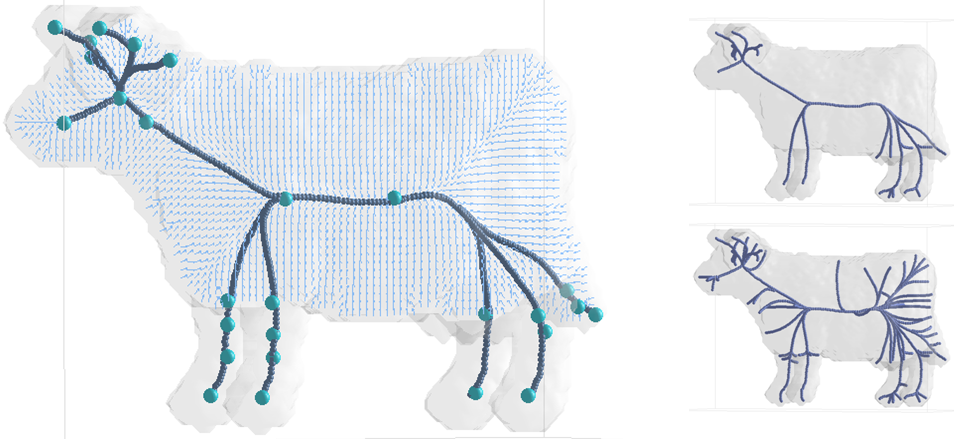The divergence of a vector field in a given region of space is a scalar quantity that characterizes the rate of flow leaving that region. Divergence is an interesting property because it measures the “sinkness” of a point. A negative divergence value at a point indicates that the flow is moving mainly towards the given point. Of interest are points with low divergence values, which indicate a “sink”. A threshold on the divergence value (the divergence threshold) is used to identify new seed points. The threshold is given as a percentage of the lowest divergence value in the entire vector field. From each of these new seed points, a new field-line is generated which will connect to the core skeleton.
By varying the divergence threshold (another parameter of our progam) the user varies the number of seed points selected and correspondingly the number of new skeleton segments, generating an entire hierarchy of skeletons that we call the level 1 skeleton. Different thresholds can be chosen based upon the application of the curve-skeleton.
High Curvature points and the "level 2 skeleton hierarchy"
Another set of seed points for new skeletal segments consists of the convex corners of the object. These will create paths from the boundary to the skeleton and generate the “tendrils” found in medial axis representations. The curvature of every boundary voxel can be computed and areas of high curvature can be used to seed new path-lines, using a threshold similar to the divergence threshold.
A disadvantage of boundary seeding based on the curvature is that it is affected even by small amounts of noise present on the object’s boundary. A possible solution to this problem is to consider an extended neighborhood when computing the curvature at boundary voxels, not just the face, edge and vertex neighbors. For certain applications, such as virtual navigation, boundary seeds could be used differently, i.e., to specifically generate certain navigation paths.
The skeleton segments originated at seed points on the boundary will create another level of hierarchy for each curve-skeleton computed thus far. Each of the level-1 skeletons will form the root of a new hierarchy developed by varying the number of boundary-seeded segments (via the user specified curvature threshold). We call this new hierarchy level the level 2 skeleton hierarchy.
Note that the boundary seeds can be added either directly to the core skeleton or to a level 1 skeleton. However, a strict hierarchy is achieved only if the hierarchy levels below the current level are fixed: for example, in order to generate a strict level 2 hierarchy, the core skeleton and the number of divergence seeds must be fixed and only the number of boundary seeds be allowed to vary.
Note: the bundary seeding is not included in the downloadable programs.
| Download |
The C++ source code is available for download here:
| pfSkel | v1.2.1.1 | pfSkel-1.2.1.1.tar.gz | 99KB |
The code uses the following libraries:
developed at The Mathematical and Computational Sciences Division of The National Institute of Standards and Technology.
Note: You don't have to download the libraries from the above sites. They are included in the source code.
A sample dataset is also available to try out the program: cow
(85x31x54)
Run the program like this (version 1.2.1.1):
./pfSkel cow.85x31x54.vol 85 31 54 0 6 0 cow
This should give you the "core"
skeleton which looks like this:
 download skeleton
file:
download skeleton
file:
Note that we have no skeleton
segments for the tail, the horns and the ears.
Or try:
./pfSkel
cow.85x31x54.vol 85 31 54 0 6 25 cow
This should give you a more
detailed skeleton, using 25% divergence seeds, which looks like this:
Now we have a tail, horns and
ears.
Note:
I use AVS/Express to visualize
the skeletons and make these pretty pictures. It's a great tool but it's
not free.
My suggestion is to try VTK to
visualize the skeletons. Here is a small vtk program that renders the skeleton together with the volume: vtkSkelViewer.tar.gz.
Note that the name of the volume needs to be of the same format as the cow volume mentioned above: name.size.vol.
| Results |
|
|
Bellow we present the results we obtained for different objects.
|
|
|
|
|
|
|
| 1. | 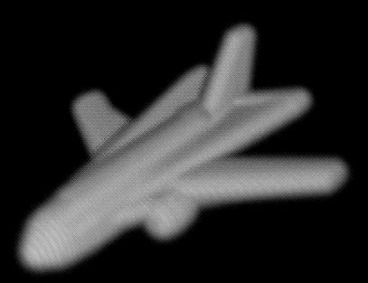 | 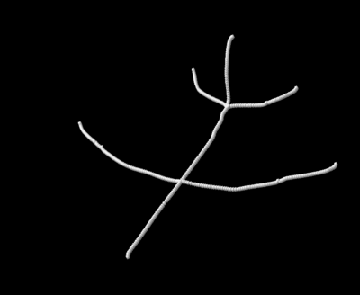 | 2. | 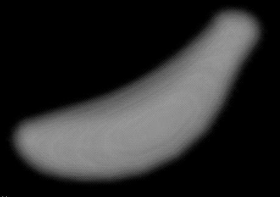 | 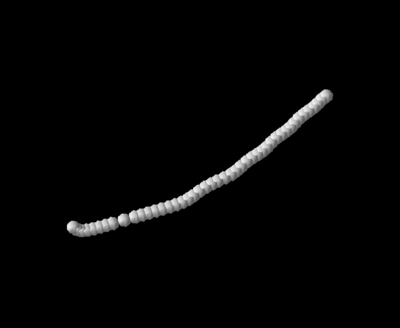 |
| 3. | 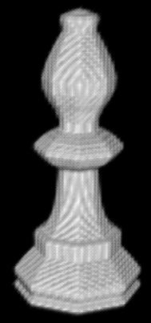 | 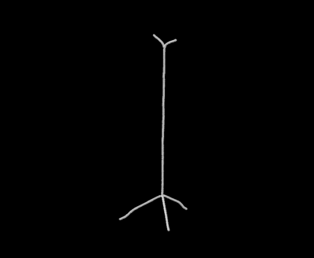 | 4. | 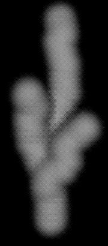 | 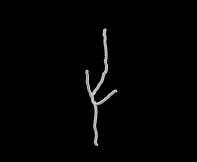 |
| 5. | 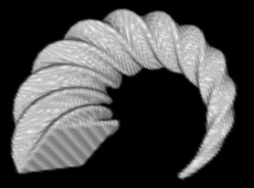 | 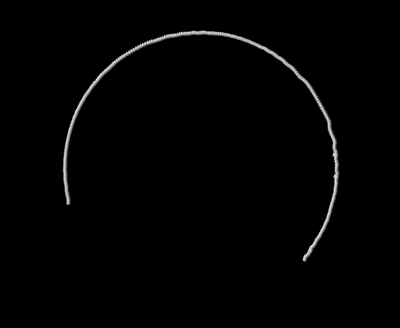 | 6. |  |
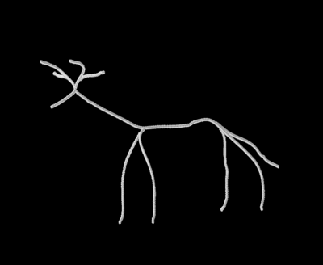 |
| 7. | 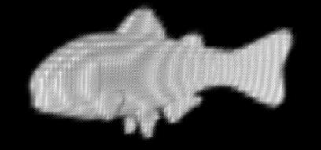 | 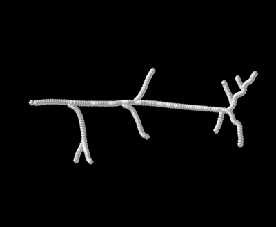 | 8. | 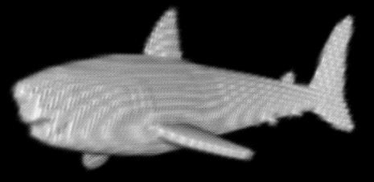 | 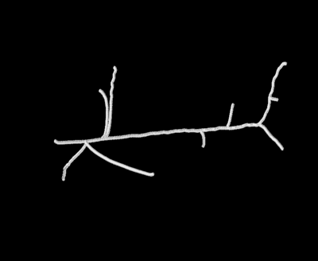 |
| 9. | 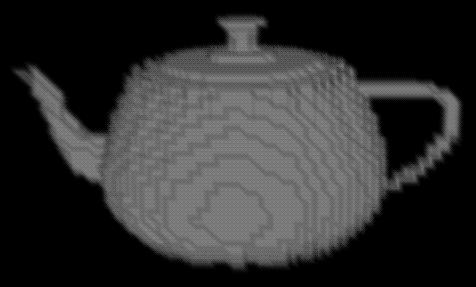 | 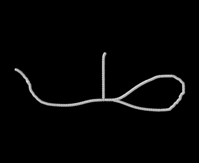 | 10. | 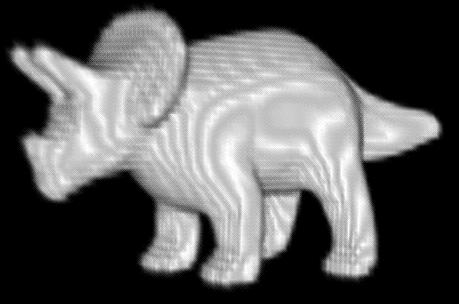 | 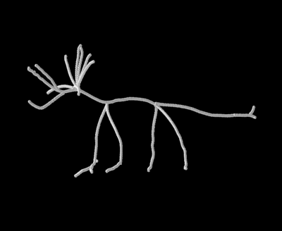 |
| 11. | 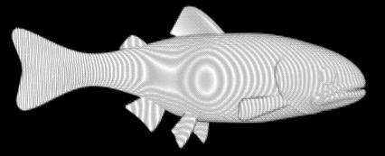 | 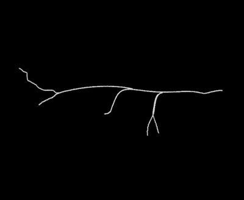 | 12. | 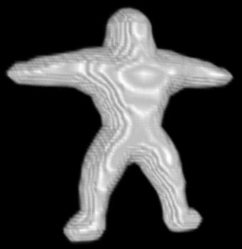 | 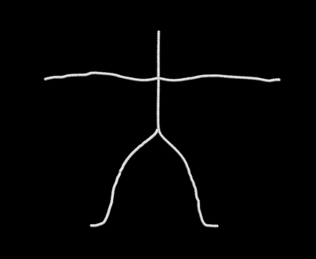 |
| 13. | 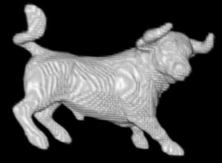 | 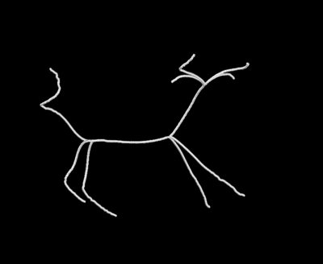 | 14. | 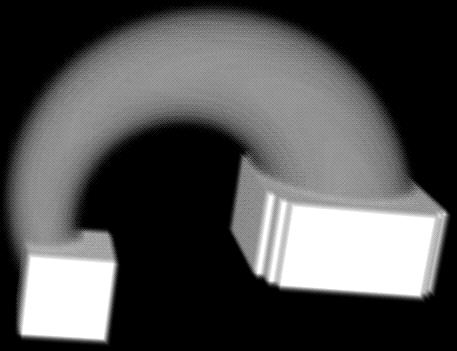 | 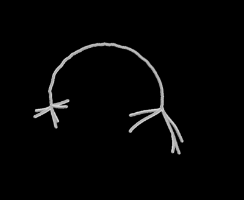 |
| 15. | 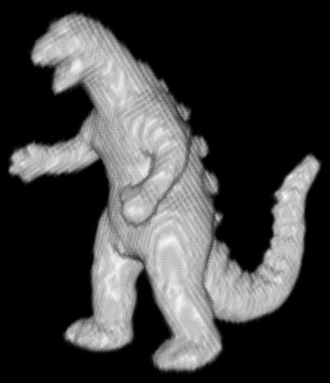 | 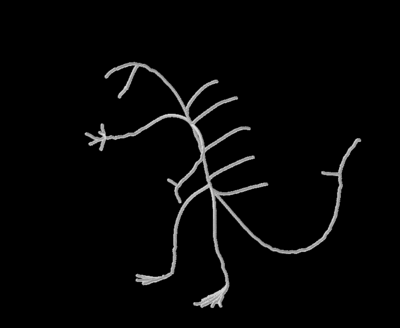 | 16. | 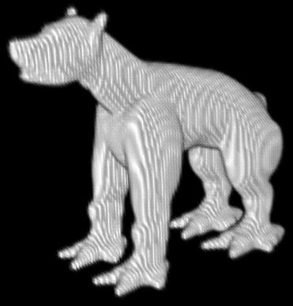 | 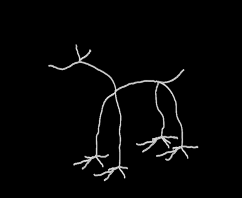 |
| 17. | 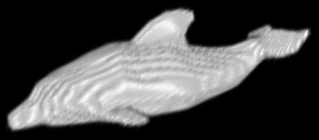 | 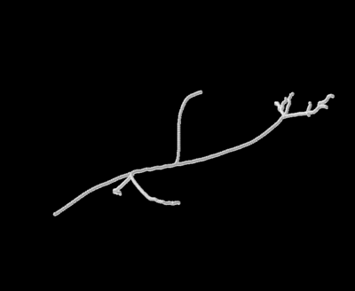 | 18. | 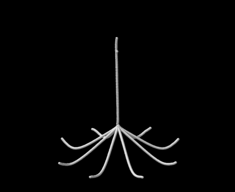 | |
| 19. | 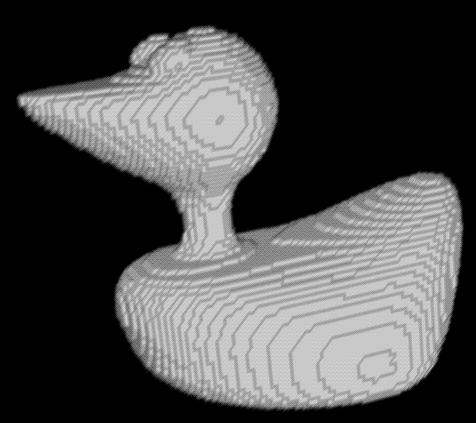 |  |
20. | 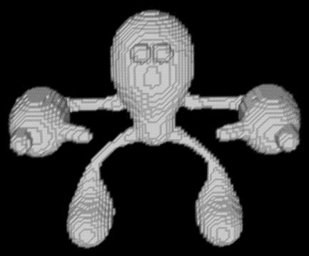 | 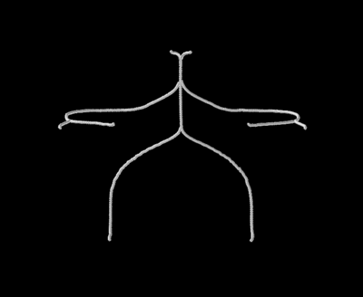 |
| 21. | 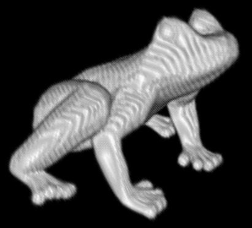 | 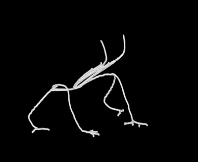 | 22. |
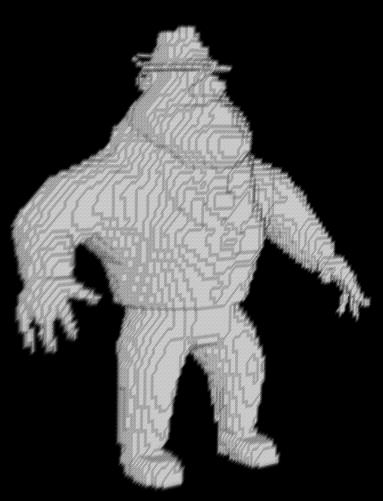 |
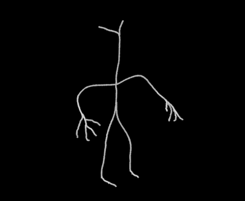 |
| 23. |
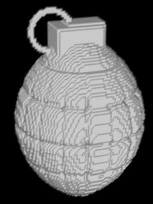 |
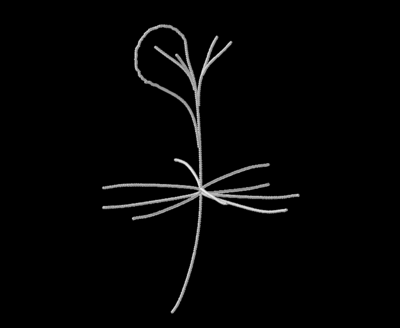 |
24. |
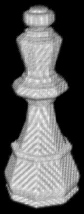 |
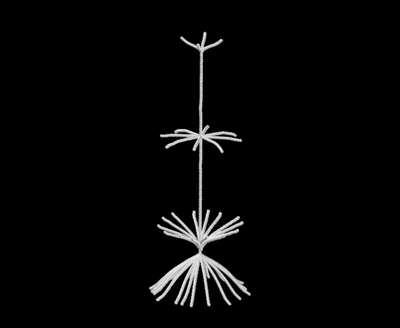 |
| 25. |
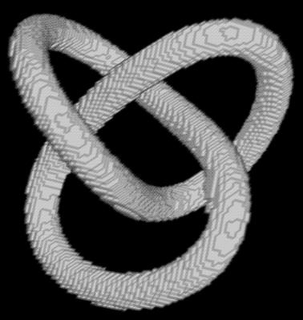 |
|
26. |
|
|
| 27. |
|
|
28. |
|
|
| 29. |
|
|
30. |
|
|
| 31. |
|
|
32. |
|
|
| 33. |
|
|
34. |
|
|
| 35. |
|
|
36. |
|
|
| 37. |
|
|
38. |
|
|
References:
[1] Chuang J-H, Tsai C, Ko M-C (2000) Skeletonization of Three-Dimensional Object Using Generalized Potential Field. IEEE Trans. Pattern Analysis and Machine Intelligence, 22(11):1241-1251
| Publications |
Cornea N.D., Silver D., Min P. (2005). Curve-Skeleton Applications. In Proceedings IEEE Visualization, pp. 95-102, 2005. [ here ]
Cornea N.D.,Silver D., Yuan X., Balasubramanian R. (2005). Computing Hierarchical Curve-Skeletons of 3D Objects. The Visual Computer 21(11):945-955, Springer-Verlag, October, 2005. [ here ]
| Nicu D. Cornea | Nov 4, 2005 |